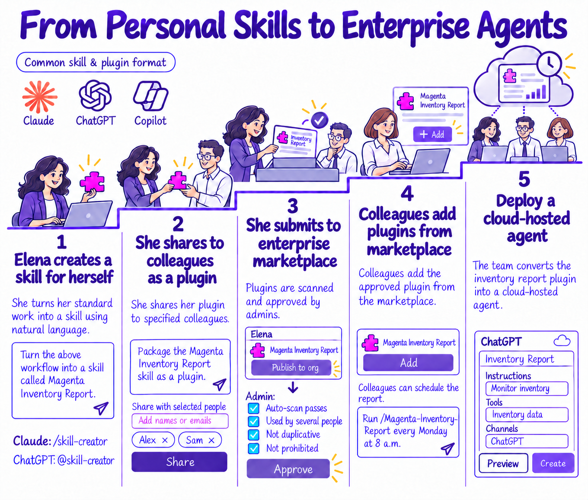

From Personal Skills to Enterprise Agents
Follow Elena from an inventory-report task to a tested personal skill, a plugin shared with colleagues, marketplace review, and a managed enterprise agent. A practical, fictional case study about testing, sharing, responsible adoption, and cloud deployment. AI-generated conversation with Tim and Nichalia.
Listen to the episode
Download audioThe five-stage journey
Select to enlarge ↗